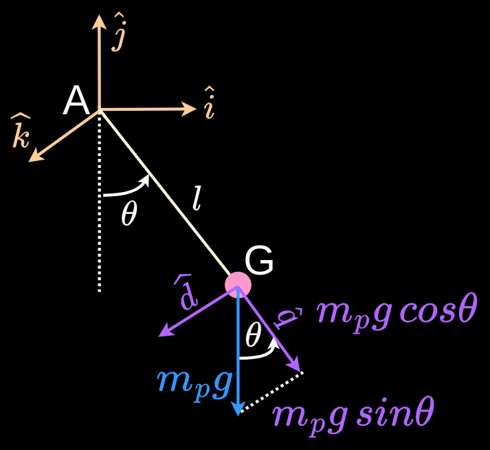

The torque at A resulting from the downward pull of gravity on the pendulum's mass at G is given by:
$$
\bigl|M^{\scriptsize{A}}_g\bigr| = -m^{\scriptsize{G}} g \,sin\theta \cdot l
$$
The moment is in the $\hat{k}$ direction.
Any force along $\hat{d}$ does not convert to a torque about $\hat{k}$. The dot product of the pole's weight and $\hat{d}$, the unit vector in the direction of the pole, gives the component of the pole's weight in the direction of the pole, $m^{\scriptsize{G}} g\,cos\theta$.